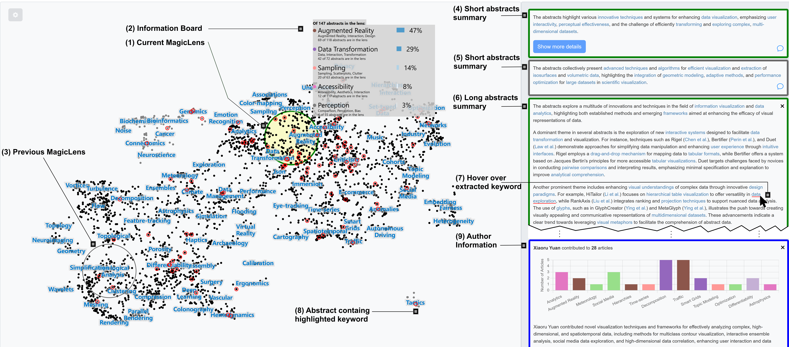

Prompt Lenses: Improving the Magic of Lenses (for Text Analysis)
(opens in new tab)
Venue. EuroVis (2025)
Materials.
DOI(opens in new tab)
PDF(opens in new tab)
Abstract. Incorporating the analytical power of LLMs with the fast-paced interaction of magic lens-based exploration is an intriguing prospect. Unfortunately, the costs of LLM-generated analyses are high, and applying them continuously seems prohibitive at the moment. Accordingly, we suggest an LLM integration into magic lenses that supports the progressive triggering of costly analyses based on users’ interest in the data hovered with the lens. We exemplify this approach with a lens technique for exploring dimensionality-reduced embeddings of visualization paper abstracts shown in a scatterplot. Our proposed approach links back analysis results to the explored visualization improving the comprehensibility and the assessment of the shown results.
Link to this page: